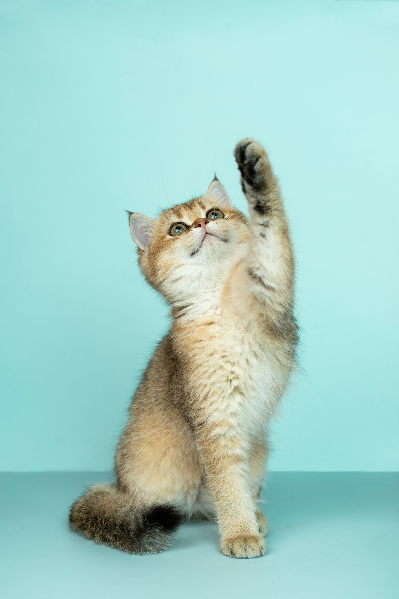
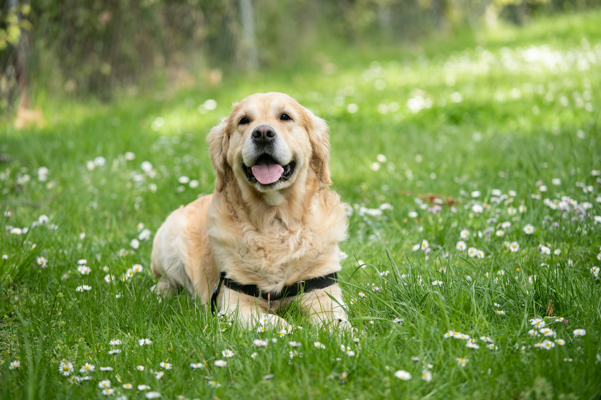
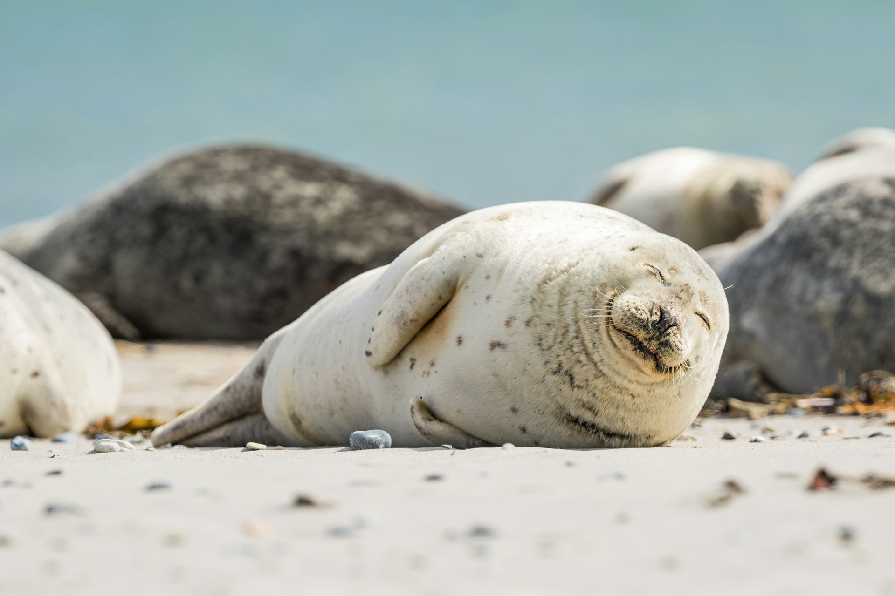
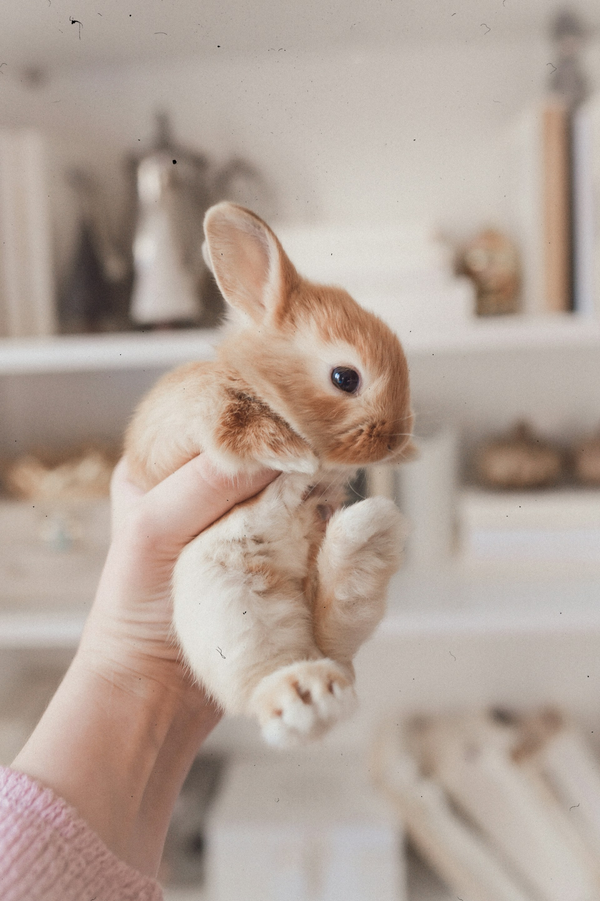

Hello World
Hello! This is my first blog entry. There's nothing to see here, as it is for testing.
Oh, and before I go, see this cat picture:

A white and brown long fur cat that is rising his or her left hand (source: Unsplash)
Dog:

A medium short-coated white dog lying on green grass field (source: Unsplash)
Seal:

A number of sea lions laying on a beach (source: Unsplash)
And bunny:

Person holding white and brown rabbit (source: Unsplash)
Aren't they cute?
Alright. See you!